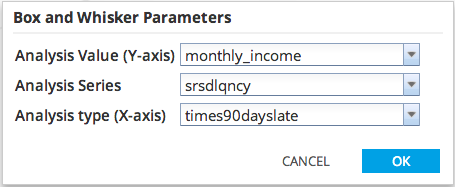
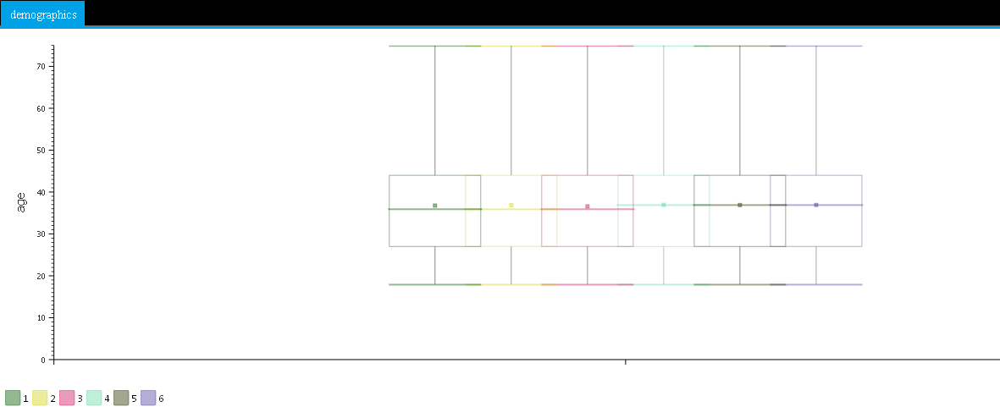

The Box-And-Whisker Chart allows users to choose an Analysis Value column, an Analysis Series column, and an Analysis Type column from the dataset. The maximum value, minimum value, mean, median, Q1 & Q3 of the Analysis Value of each Analysis Series in each Analysis Type are plotted in Box-And-Whisker diagrams in the resulting graph.

Analysis Value corresponds to the X-axis.
Analysis Type corresponds to the X-axis.
Analysis Series is grouping denoted by color.
